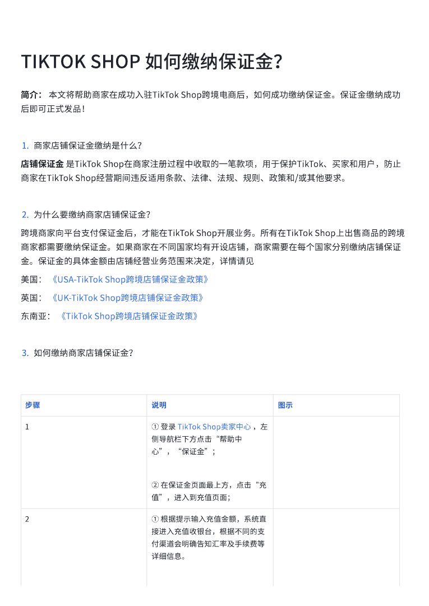
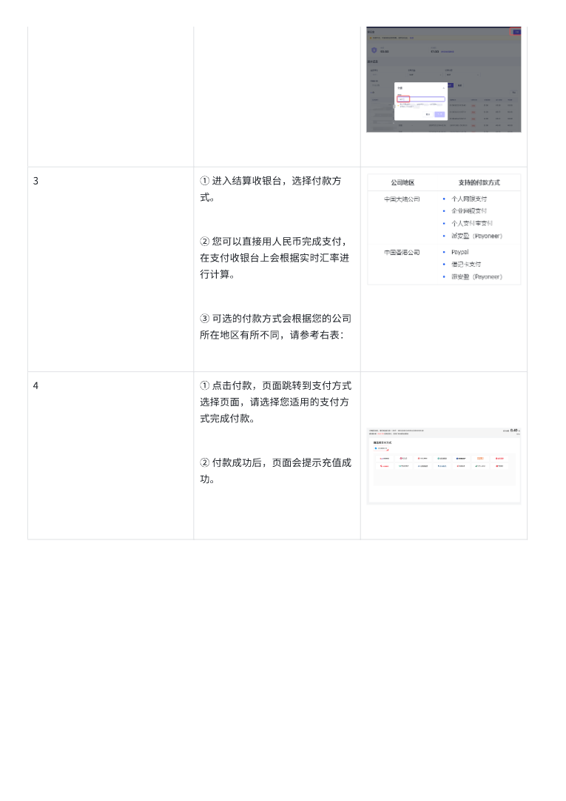

第 1 页

查看文字
TIKTOK⟦U+0001⟧SHOP⟦U+0001⟧如何缴纳保证金？⟦U+0001⟧简介：⟦U+0001⟧本文将帮助商家在成功入驻TikTok⟦U+0001⟧Shop跨境电商后，如何成功缴纳保证金。保证金缴纳成功后即可正式发品！1.商家店铺保证金缴纳是什么？店铺保证金⟦U+0001⟧是TikTok⟦U+0001⟧Shop在商家注册过程中收取的一笔款项，用于保护TikTok、买家和用戶，防止商家在TikTok⟦U+0001⟧Shop经营期间违反适用条款、法律、法规、规则、政策和/或其他要求。⟦U+0001⟧2.为什么要缴纳商家店铺保证金？跨境商家向平台支付保证金后，才能在TikTok⟦U+0001⟧Shop开展业务。所有在TikTok⟦U+0001⟧Shop上出售商品的跨境商家都需要缴纳保证金。如果商家在不同国家均有开设店铺，商家需要在每个国家分别缴纳店铺保证金。保证金的具体金额由店铺经营业务范围来决定，详情请⻅美国：⟦U+0001⟧《USA-TikTok⟦U+0001⟧Shop跨境店铺保证金政策》⟦U+0001⟧英国：⟦U+0001⟧《UK-TikTok⟦U+0001⟧Shop跨境店铺保证金政策》⟦U+0001⟧东南亚：⟦U+0001⟧《TikTok⟦U+0001⟧Shop跨境店铺保证金政策》⟦U+0001⟧3.如何缴纳商家店铺保证金？步骤⟦U+0001⟧说明⟦U+0001⟧图示⟦U+0001⟧1⟦U+0001⟧①⟦U+0001⟧登录⟦U+0001⟧TikTok⟦U+0001⟧Shop卖家中心⟦U+0001⟧，左侧导航栏下方点击“帮助中心”，“保证金”；⟦U+0001⟧②⟦U+0001⟧在保证金⻚面最上方，点击“充值”，进入到充值⻚面；⟦U+0001⟧2⟦U+0001⟧①⟦U+0001⟧根据提示输入充值金额，系统直接进入充值收银台，根据不同的支付渠道会明确告知汇率及手续费等详细信息。⟦U+0001⟧
第 2 页

查看文字
3⟦U+0001⟧①⟦U+0001⟧进入结算收银台，选择付款方式。⟦U+0001⟧②⟦U+0001⟧您可以直接用人⺠币完成支付，在支付收银台上会根据实时汇率进行计算。⟦U+0001⟧③⟦U+0001⟧可选的付款方式会根据您的公司所在地区有所不同，请参考右表：⟦U+0001⟧4⟦U+0001⟧①⟦U+0001⟧点击付款，⻚面跳转到支付方式选择⻚面，请选择您适用的支付方式完成付款。⟦U+0001⟧②⟦U+0001⟧付款成功后，⻚面会提示充值成功。⟦U+0001⟧